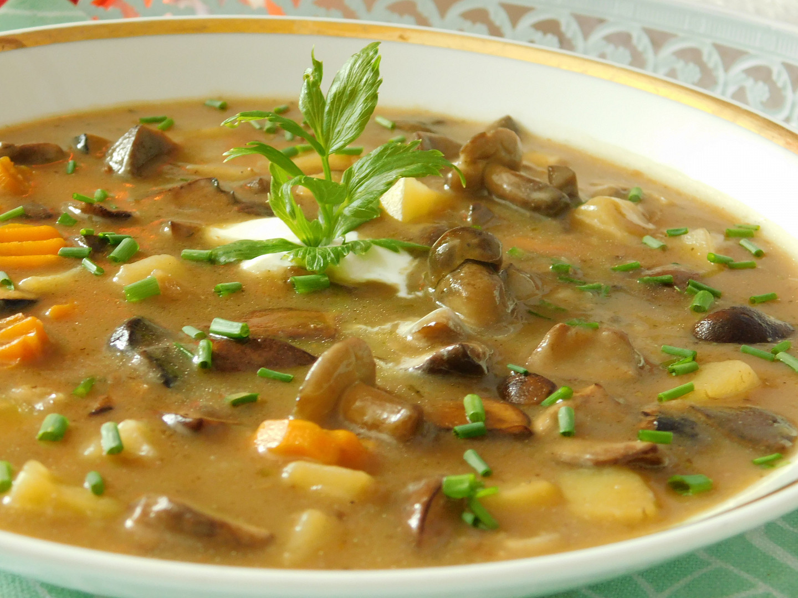

Výživná zeleninová polévka s mraženými houbami a klasickou jíškou. Skvělá jako teplý oběd v chladnějším období.
Necháme mražené houby povolit. Mezitím oloupeme a nakrájíme mrkev, celer, petržel, brambory na kostky a pórek na půlkolečka.
V hrnci rozpustíme 2 lžíce másla, přidáme kořenovou zeleninu s pórkem a krátce orestujeme.
Přidáme rozmrazené houby, zalijeme vodou, osolíme, opepříme, přidáme bobkový list a přivedeme k varu. Vaříme cca 20 minut.
Na pánvi rozpustíme zbylé máslo a přidáme mouku. Orestujeme do zlaté barvy, necháme vychladnout, rozmícháme v cca 200 ml studené vody a vyšleháme dohladka.
Po 20 minutách vaření přidáme do polévky brambory a vaříme je téměř do měkka.
Vlijeme připravenou jíšku a vše ještě asi 20 minut provaříme. Dle chuti dosolíme a dokořeníme.